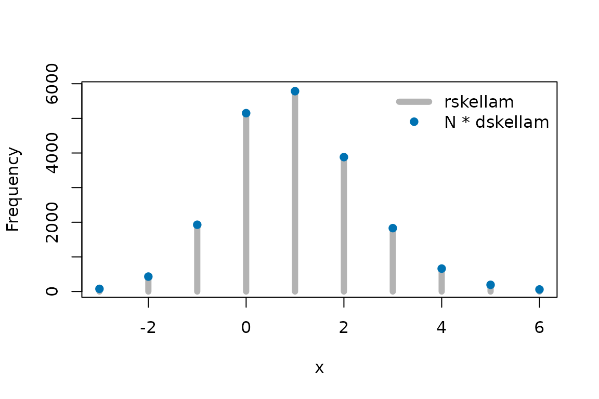
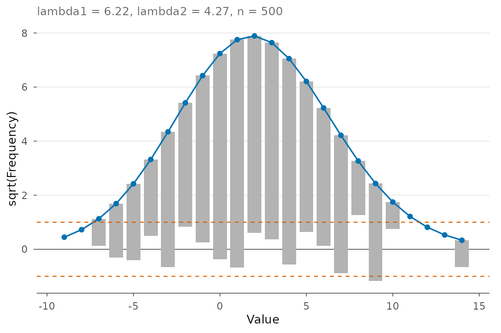
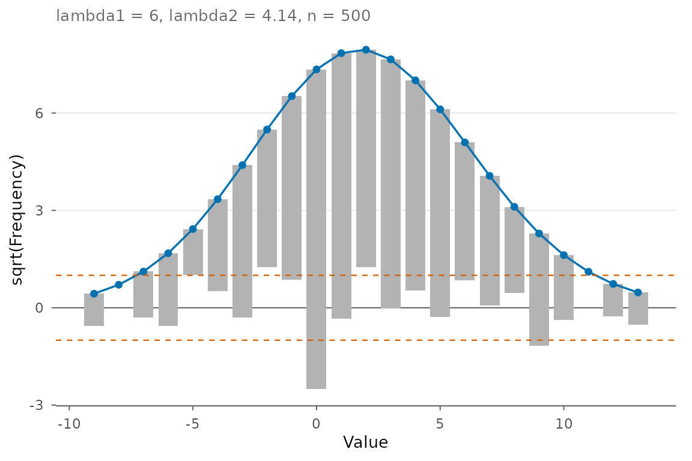

Validating the skellam package
Patrick E. Brown; revised by Montasser Ghachem and Oguz Ersan
Source:vignettes/validate_skellam.Rmd
validate_skellam.RmdWhat this vignette checks
If \(Y_1 \sim \mathrm{Poisson}(\lambda_1)\) and \(Y_2 \sim \mathrm{Poisson}(\lambda_2)\) are independent, their difference \(X = Y_1 - Y_2\) has the Skellam distribution,
\[ P(X = x) = e^{-(\lambda_1+\lambda_2)} \left(\frac{\lambda_1}{\lambda_2}\right)^{x/2} I_{|x|}\!\left(2\sqrt{\lambda_1\lambda_2}\right), \qquad x \in \mathbb{Z}, \]
with mean \(\lambda_1 - \lambda_2\) and variance \(\lambda_1 + \lambda_2\). This vignette checks, with numbers rather than by eye, that the functions of the package agree with that definition and with each other:
-
dskellamagainst an exact sum over Poisson probabilities; -
pskellamagainst cumulative sums ofdskellam, andqskellamas its inverse; -
rskellamagainstdskellamwith a goodness-of-fit test; -
skellam.fitandskellam.regagainst known parameters in simulated data.
Every random number below is drawn after
set.seed(20261108), so the output is the same each time the
vignette is built.
1. The probability mass function
By definition, \(P(X = x) = \sum_k P(Y_1 = k + x)\,P(Y_2 = k)\). Summing that series directly is slow but exact, which makes it a good reference.
pmf_by_sum <- function(x, l1, l2) {
k <- max(0, -x):(abs(x) + 200 + 20 * (l1 + l2))
sum(dpois(k + x, l1) * dpois(k, l2))
}
x <- -10:15
for (L in list(c(1.5, 0.5), c(12, 8))) {
ref <- vapply(x, pmf_by_sum, 0, l1 = L[1], l2 = L[2])
cat(sprintf("lambda = (%g, %g): largest relative difference %.1e\n",
L[1], L[2], max(abs(dskellam(x, L[1], L[2]) / ref - 1))))
}
#> lambda = (1.5, 0.5): largest relative difference 6.7e-15
#> lambda = (12, 8): largest relative difference 2.7e-15The probabilities also add up to one, including at rates far beyond what the series above can handle quickly:
for (L in list(c(1.5, 0.5), c(12, 8), c(1e4, 1e4), c(1e6, 1e6))) {
s <- sqrt(sum(L)); m <- L[1] - L[2]
x <- seq(floor(m - 30 * s), ceiling(m + 30 * s))
cat(sprintf("lambda = (%g, %g): 1 - sum = %.1e\n", L[1], L[2],
1 - sum(dskellam(x, L[1], L[2]))))
}
#> lambda = (1.5, 0.5): 1 - sum = 0.0e+00
#> lambda = (12, 8): 1 - sum = -8.9e-16
#> lambda = (10000, 10000): 1 - sum = 0.0e+00
#> lambda = (1e+06, 1e+06): 1 - sum = 0.0e+00When one rate is zero the distribution is a Poisson, or a Poisson turned upside down:
2. Distribution and quantile functions
pskellam(x) should equal the running sum of
dskellam up to x, and the two tails should add
up to one.
l1 <- 12; l2 <- 8
x <- -40:50
max(abs(pskellam(x, l1, l2) - cumsum(dskellam(x, l1, l2))))
#> [1] 1.110223e-15
max(abs(pskellam(x, l1, l2) + pskellam(x, l1, l2, lower.tail = FALSE) - 1))
#> [1] 0For a discrete distribution the quantile function returns the smallest integer \(x\) with \(P(X \le x) \ge p\). Feeding a value of the distribution function back in must therefore return the same \(x\), on both tails and on the log scale:
x <- -15:25
all(qskellam(pskellam(x, l1, l2), l1, l2) == x)
#> [1] TRUE
all(qskellam(pskellam(x, l1, l2, lower.tail = FALSE), l1, l2, lower.tail = FALSE) == x)
#> [1] TRUE
all(qskellam(pskellam(x, l1, l2, log.p = TRUE), l1, l2, log.p = TRUE) == x)
#> [1] TRUE
qskellam(c(0, 0.025, 0.5, 0.975, 1), l1, l2)
#> [1] -Inf -5 4 13 Inf3. Random generation
rskellam draws the difference of two Poisson variates.
We compare the observed frequencies of 20,000 draws with the
probabilities from dskellam, pooling the sparse tails so
every cell expects at least 5 observations.
N <- 20000
lambda1 <- 1.5; lambda2 <- 0.5
z <- rskellam(N, lambda1, lambda2)
c(mean = mean(z), expected = lambda1 - lambda2)
#> mean expected
#> 1.0044 1.0000
c(variance = var(z), expected = lambda1 + lambda2)
#> variance expected
#> 2.013481 2.000000
lo <- qskellam(0.001, lambda1, lambda2); hi <- qskellam(0.999, lambda1, lambda2)
cells <- lo:hi
prob <- dskellam(cells, lambda1, lambda2)
prob[1] <- pskellam(lo, lambda1, lambda2) # all x <= lo
prob[length(prob)] <- pskellam(hi - 1, lambda1, lambda2, lower.tail = FALSE) # all x >= hi
obs <- table(factor(pmin(pmax(z, lo), hi), levels = cells))
chisq.test(obs, p = prob)
#>
#> Chi-squared test for given probabilities
#>
#> data: obs
#> X-squared = 3.2351, df = 9, p-value = 0.9542
plot(cells, as.vector(obs), type = "h", lwd = 6, col = "grey70",
xlab = "x", ylab = "Frequency", main = "")
points(cells, N * prob, pch = 19, col = "#0072B2")
legend("topright", c("rskellam", "N * dskellam"), lwd = c(6, NA), pch = c(NA, 19),
col = c("grey70", "#0072B2"), bty = "n")
Observed frequencies of 20,000 draws (bars) and the expected frequencies from dskellam (points).
4. Estimation
Maximum likelihood for a sample
x <- rpois(2000, 12) - rpois(2000, 8)
fit <- skellam.fit(x)
summary(fit)
#>
#> Call:
#> skellam.fit(x = x)
#>
#> Skellam distribution fitted by maximum likelihood (n = 2000)
#>
#> Estimate Std. Error 2.5 % 97.5 %
#> lambda1 12.066 0.3276 11.440 12.725
#> lambda2 8.159 0.3246 7.547 8.821
#>
#> Sample and fitted moments:
#> sample fitted
#> mean 3.906500 3.90650
#> variance 20.192854 20.22500
#> skewness -0.001085 0.04295
#> excess kurtosis -0.014998 0.04944
#>
#> var(x) - |mean(x)| = 16.29 (must be >= 0 for two positive rates)
#> log-likelihood -5843.096, AIC 11690.19, BIC 11701.39At the maximum the fitted mean equals the sample mean, and the 95% confidence intervals cover the true values (12, 8). Samples whose variance does not exceed the absolute mean cannot come from a Skellam with two positive rates; the estimate then puts one rate at zero, with a warning, instead of returning a negative rate:
coef(skellam.fit(rep(3, 50)))
#> Warning: the estimate lies on the boundary (a rate is 0): the sample variance
#> does not exceed the absolute mean; standard errors are not available
#> lambda1 lambda2
#> 3 0
coef(skellam.fit(c(rep(2, 45), rep(3, 5))))
#> Warning: the estimate lies on the boundary (a rate is 0): the sample variance
#> does not exceed the absolute mean; standard errors are not available
#> lambda1 lambda2
#> 2.1 0.0Regression
skellam.reg() lets both rates depend on covariates
through log links. For \(y = Y_1 -
Y_2\), the part of the formula before | is the model
for \(\lambda_1\) (the counts that are
added) and the part after it the model for \(\lambda_2\) (the counts that are
subtracted).
n <- 1000
d <- data.frame(u = rnorm(n), v = rnorm(n))
d$y <- rpois(n, exp(1 + 0.5 * d$u)) - rpois(n, exp(-0.5 + 0.3 * d$v))
reg <- skellam.reg(y ~ u | v, data = d)
summary(reg) # true values: lambda1 (1, 0.5), lambda2 (-0.5, 0.3)
#>
#> Call:
#> skellam.reg(formula = y ~ u | v, data = d)
#>
#> log(lambda1): rate of the counts that are added
#> Estimate Std. Error z value Pr(>|z|)
#> (Intercept) 1.00026 0.03033 32.98 <2e-16 ***
#> u 0.46286 0.02096 22.09 <2e-16 ***
#> ---
#> Signif. codes: 0 '***' 0.001 '**' 0.01 '*' 0.05 '.' 0.1 ' ' 1
#>
#> log(lambda2): rate of the counts that are subtracted
#> Estimate Std. Error z value Pr(>|z|)
#> (Intercept) -0.53322 0.11106 -4.801 1.58e-06 ***
#> v 0.30633 0.07993 3.832 0.000127 ***
#> ---
#> Signif. codes: 0 '***' 0.001 '**' 0.01 '*' 0.05 '.' 0.1 ' ' 1
#>
#> n = 1000, residual df = 996, log-likelihood -2010.799, AIC 4029.599, BIC 4049.23The fitted probabilities of each value of \(y\) add up to one for every observation, and the randomized quantile residuals are standard normal when the model is right:
5. Diagnostic plots
With ggplot2 installed, plot() compares the data with
the fit. The hanging rootogram shows the square roots of the observed
counts as bars hanging from the square roots of the expected counts;
bars that end near zero mean the model fits. A sample with 60 extra
zeros shows up as a bar reaching far below zero at 0.
x0 <- rpois(500, 6) - rpois(500, 4)
x1 <- c(rpois(440, 6) - rpois(440, 4), rep(0, 60))
plot(skellam.fit(x0))
Hanging rootograms for a Skellam sample (first) and for the same kind of sample with 60 extra zeros (second).
plot(skellam.fit(x1))
Hanging rootograms for a Skellam sample (first) and for the same kind of sample with 60 extra zeros (second).
Getting help
If you find a bug, please file an issue with a minimal reproducible example on GitHub.